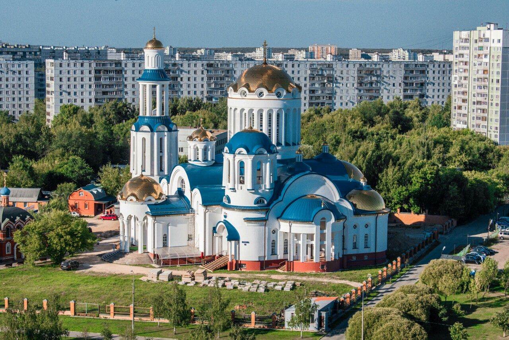
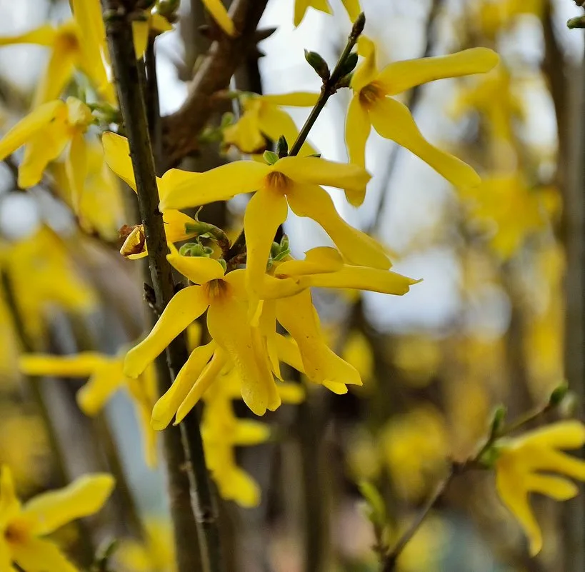
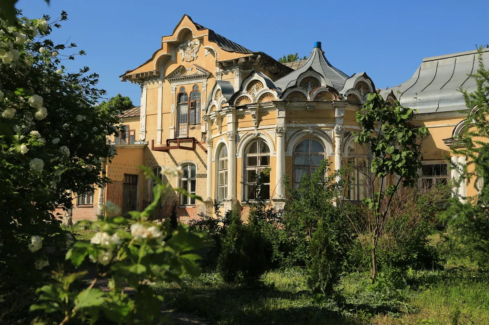
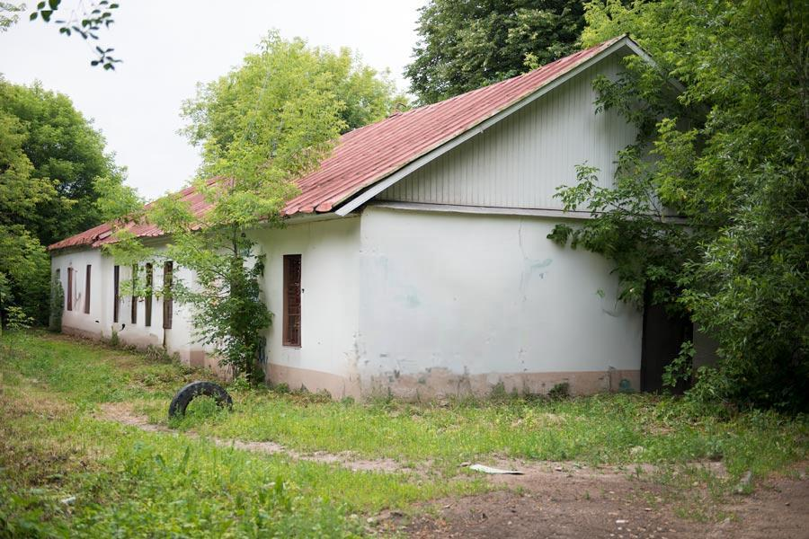

Загадочный север Москвы!
Добро пожаловать на интерактивную карту достопримечательностей СВАО (Северо-восточного административного округа) Москвы!
Парк света
Протяженность маршрута: 3,5 км
Продолжительность маршрута: 60 минут
Материальные затраты: 300 рублей
Парк Света
— парк на северо-востоке Москвы, расположенный в районе Бибирево. Общая площадь составляет 7,5 га. Парк был разбит на территории старого сквера вдоль Костромской улицы, со временем пришедшего в запустении. Открытие состоялось 23 августа 2019 года после завершения работ по комплексному благоустройству территории в рамках программы «Мой район».
Главной особенностью нового парка стало разнообразное освещение, включая художественную подсветку малых архитектурных форм: качелей, скамейки, арок. В 2019 году Парк Света вошел в десятку мест Москвы, в которых стоит побывать в темное время суток.
До проведения благоустройства на территории вдоль Костромской улицы находился сквер с выделенной дорожно-тропиночной сетью, озеленением и детской площадкой. Привести в порядок территорию было решено по просьбе местных жителей. В ходе публичных слушаний, состоявшихся 23 октября 2018 года, а также последовавших в течение 7 дней удаленных обсуждений, жители одобрили реализацию представленного проекта «Парк света».
Среди прочего участники высказались за установку большего количества лавочек (в том числе — специализированных для инвалидов), урн, обустройство площадки для выгула собак, ретроплощадки для пожилых. На детских и спортивных площадках предлагалось установить оборудование для маломобильных граждан. Кроме того, была поддержана организация в парке красочного освещения с обустройством арочной подсветки и подсветки деревьев. Всего в обсуждении приняли участие 189 жителей Бибирева.
Во время публичных слушаний было предложено несколько вариантов будущего благоустройства — многие предполагали организацию яркой подсветки. По итоговому проекту оформления, в парке предполагалась установка больших круглых качелей и навесов со светодиодной подсветкой, святящихся скамеек, а также организация зоны тихого отдыха под названием «волшебный лес» — со стоящими посреди деревьев светодиодными фигурами, которые можно использовать в качестве мест для сидения.
Проект нового парка на месте транзитного сквера был разработан архитектурным бюро Megabudka.
Особенность Парка Света заключается в нестандартном освещении. Впрочем, как утверждает пресс-служба Префектуры СВАО, такое название территория получила также благодаря соседству с храмом («свет души») и роддомом («свет будущего»).
Работы по благоустройству территории начались в апреле 2019 года и завершились в июле. Торжественное открытие нового парка было запланировано на 9 августа, однако ввиду неблагоприятных погодных условий было перенесено. В итоге праздник по случаю открытия состоялся 23 августа 2019 года. На открытии присутствовал префект СВАО Алексей Беляев.
Парк представляет собой вытянутую вдоль Костромской улицы озелененную территорию, разделенную на несколько функционально-тематических зон. При строительстве специалисты придерживались итогового проекта оформления, однако в ходе работ были внесены изменения: например, игровой склон перенесли дальше первоначального плана, чтобы сохранить растущие деревья. Помимо этого, в парке отсутствуют заявленные в проекте светящиеся навесы.
Новые дорожки проложили по уже существующей дорожно-тропиночной сети, включая протоптанные тропы. Появилась также велодорожка, скамейки и урны.
Территорию дополнительно озеленили. В планах благоустройства значилась высадка 37 деревьев и 3160 кустарников. Кроме того, планировалось разбить 1.4 тысячи квадратных метров цветников и восстановить 44,1 тысячи квадратных метров газонов.
Парке Света разбиты две детские площадки. Первая представляет собой игровой склон, организованный на искусственном холме. Здесь на цветном прорезиненном покрытии установлены три горки, сетка для лазания, искусственные неровности и деревянные брусья. На второй площадке установили игровой комплекс с горкой и скалодромом, комплекс-паутинку для лазания, песочницу, качалки на пружинах и качели-гнезда.

На территории зоны отдыха есть три площадки для воркаута, оснащенные разнообразными комплексами для уличных тренировок: рукоходами, шведскими стенками, турниками, скамьей в наклоне.
Площадка для выгула собак находится в северо-западной части парка. Территория освещена и оборудована современными элементами для дрессировки собак: есть тоннель, бум, кольцо для прыжков, перекладины, горка, слалом.
На главной аллее парка изначально было выделено место под скульптурную композицию, однако к моменту открытия зоны отдыха арт-объект так и не появился: на его месте была временно установлена табличка с надписью «Ждем семью бобров». Бронзовая скульптура «Семейство бобров» была установлена в Парке света в День города. Авторами композиции стали заслуженные художники России и Армении Микаэль и Ваге Согояны.
Бобер — это символ Бибирева. Изображение этого животного можно найти на гербе района — оно напоминает о бобрах, водившихся в местных реках в старину. По итогам 2019 года Парк Света назван одной из пяти главных новых достопримечательностей Москвы, построенных в 2019 году по программе «Мой район». Известный урбанист и блогер Илья Варламов включил Парк Света в свой обзор удачных примеров благоустройства на севере Москвы.
Храм Московских святых

Храм Преподобного Сергия Радонежского — храм в районе Бибирево г. Москвы. Построен в благодарность за избавление от холеры.
Возведение храма началось в 1864 году вплотную с деревянным храмом Благовещения Пресвятой Богородицы. Считается, что 13 июля 1873 года в селе Бибирево произошло чудо. Во время эпидемии холеры Чудотворная икона Преподобного Сергия Радонежского, которую носили монахи, вырвалась из рук и понеслась по воздуху. После этого эпидемия отступила. С тех пор жители Бибирева почитали день 13 июля за праздник и служили молебен Пр. Сергию. Освящение Храма Преподобного Сергия Радонежского произошло в 1894 году. Вокруг Церкви Сергия Радонежского была деревня, рядом пруд, а перед храмом протекала река Олешенка. Между церковью и прудом находилось кладбище.
В 1935—1936 годах территорию храма отобрал колхоз — деревянная Церковь Благовещения Богородицы была разобрана, дерево пошло на строительство коровника, а в каменном храме Сергия Радонежского было организовано производственное предприятие. Только в 1990 году храм и прилегающая территория 1,5 га были возвращёны Русской Православной Церкви. Церковное кладбище было уничтожено уже в 1960-х годах после включения Бибирева в состав Москвы и его последующей застройки.
Сейчас на территории храма строится новый храмовый комплекс во имя Собора Московских Святых.
Адрес храма: 127549, Москва, Костромская улица, № 7, стр. 1.Большой храм всех Московских святых стоит в шаге от станции метро Бибирево. Это «молодой» собор. Он был освящен патриархом Кириллом в феврале 2020 года. Храм большой – на 1500 человек. Храм является одним из самых крупных в Москве.
Архитектор: Захаров В.В.
Храм Собора Московских святых в Бибиреве является приписным к храму преподобного Сергия Радонежского в Бибиреве. Начало истории прихода Сергия Радонежского и самого села Бибирево связано с Московским Вознесенским женским монастырем, основанным великой княгиней Евдокией, в иночестве Евфросинией, супругой князя Димитрия Донского. Каменный храм, дошедший до наших дней, заложен был 8 августа 1893 года. После революции наполовину разрушен, после 1990-х возрожден. В конце 1980-х, в связи со строительством станции метро «Бибирево», над Сергиевским храмом нависла новая угроза уничтожения. Решили снести храм и подогнали к нему машину с металлическим шаром, специально для сноса старых зданий. Стали раскачивать шар и бить по храму. Любое другое здание разлетелось бы от первых ударов. Храм же, хоть и небольшой, а устоял. Водитель выпрыгнул из своей машины и бежать… Испугался… Поскольку в Бибиреве проживает свыше 200 тысяч человек, малого храма катастрофически не хватало, и было решено воздвигнуть большой каменный, который и был освящен во имя Собора Московских святых.
Церковь преподобного Сергия в Бибирево была построена в 1894 году — в благодарность об избавлении села от холеры. Даже сохранилось предание об этом чуде. Свирепствовала болезнь, и во время одного из крестных ходов икона преподобного Сергия, буквально, вырывалась из рук монахов. Было ощущение, что она летит по воздуху. После этого крестного хода эпидемия прекратилась.
Храм преподобного Сергия в Бибирево
Храм Преподобного Сергия Радонежского — храм в районе Бибирево г. Москвы. Построен в благодарность за избавление от холеры.

Возведение храма началось в 1864 году вплотную с деревянным храмом Благовещения Пресвятой Богородицы. Считается, что 13 июля 1873 года в селе Бибирево произошло чудо. Во время эпидемии холеры Чудотворная икона Преподобного Сергия Радонежского, которую носили монахи, вырвалась из рук и понеслась по воздуху. После этого эпидемия отступила. С тех пор жители Бибирева почитали день 13 июля за праздник и служили молебен Пр. Сергию. Освящение Храма Преподобного Сергия Радонежского произошло в 1894 году. Вокруг Церкви Сергия Радонежского была деревня, рядом пруд, а перед храмом протекала река Олешенка. Между церковью и прудом находилось кладбище.
В 1935—1936 годах территорию храма отобрал колхоз — деревянная Церковь Благовещения Богородицы была разобрана, дерево пошло на строительство коровника, а в каменном храме Сергия Радонежского было организовано производственное предприятие. Только в 1990 году храм и прилегающая территория 1,5 га были возвращёны Русской Православной Церкви. Церковное кладбище было уничтожено уже в 1960-х годах после включения Бибирева в состав Москвы и его последующей застройки.
Сейчас на территории храма строится новый храмовый комплекс во имя Собора Московских Святых.
Адрес храма: 127549, Москва, Костромская улица, № 7, стр. 1.
У храма преподобного Сергия в Бибирево сложилась непростая судьба. Как и большинство церквей, в советское время (а точнее — в 30-х годах) он был закрыт. Деревянную церковь Благовещения, которая стояла рядом, разобрали. А каменный храм преподобного Сергия переоборудовали в производственное предприятие.
Храм в Бибирево

В 1990 году храм преподобного Сергия в Бибирево вернули Церкви. Архитектура храма представляет собой эклектичный набор элементов разных эпох: круглые классические ротонды, ордерная система, византийские купола и в то же время принцип русского храма — трехчастное деление основного объема. Белоснежные стены, золото и синева куполов создают определенную цветовую драматургию.
Бабушкинский парк
Протяженность маршрута: 3,5 км
Продолжительность маршрута: 60 минут
Материальные затраты: 100 рублей
Парк культуры и отдыха «Бабушкинский» (Ба́бушкинский парк)
— небольшой парк, расположенный на территории муниципального района Лосиноостровский на севере-востоке Москвы. Площадь парка составляет около 7 Га. Является автономным учреждением Департамента культуры города Москвы.
Парк получил название по бывшему городу Бабушкин, в котором находился. В 1898 года при планировке посёлка Лосиноостровска образован «общественный парк, длиною в одну версту, площадью 14 1/2 десятин». В 1905 году в результате работы Общества Благоустройства, возникшего в посёлке, в парке «устраиваются общественные площадки во всю длину его прорезывается шестиаршинная аллея с боковыми к ней дорожками, выстраивается летний театр, зимний павильон, площадки для тенниса».

Композиция создана известным скульптором Андреем Асерьянцем.
17 мая 2014 года в Бабушкинском парке Москвы была открыта скульптурная композиция, изображающая усатого водителя за рулём паровой машины. Машина состоит из большого парового котла, возвышающейся над ним трубы и системы поршней и цепных передач с надписью «Берегите руки». За водителем предусмотрены два пассажирских места, на которых можно посидеть и сфотографироваться.
В 1955 парк был заново благоустроен и получил статус городского парка культуры и отдыха. На центральной аллее установили памятники М. С. Бабушкину и А. С. Пушкину. С включением города Бабушкин в черту Москвы стал районным парком культуры и отдыха Бабушкинского района. В 1967 в южном углу парка построен кинотеатр «Арктика». В конце 1980-х гг. в парке были «Зелёный театр на 1000 мест, шахматно-шашечный павильон, зал игровых автоматов, тир, детская площадка, аттракционы». В 2005 году накануне 50-тилетия парка выложили плиткой дорожки и установили новые скамейки, а также отреставрировали памятники Бабушкину и Пушкину.
Бюст легендарного летчика увековечен на главной аллее Бабушкинского парка. Надпись на постаменте гласит: «Герой Советского Союза Михаил Сергеевич Бабушкин Полярный летчик, Пионер освоения севера 7.X.1893- 18.V.38».
Знаменитый пилот принимал участие в поисках экспедиции Нобиле и парохода «Челюскин». Был членом экспедиции ледокола «Садко». Высшую по тому времени награду – Герой Советского Союза – Бабушкин получил за первую в мире посадку самолета на Северном полюсе, которую он совершил, доставив на лед участников экспедиции на дрейфующую научно-исследовательскую станцию «Северный полюс – 1».

Белокаменный Пушкин появился здесь в 1955 году после одного из первых благоустройств, когда территория только получила официальный статус парка культуры и отдыха. Рядом с небольшим памятником стоят две лавочки.
Ростовая фигура поэта из белого камня расположена немного в стороне от центральной аллеи парка.
Пушкин в полный рост стоит на метровом постаменте в задумчивой позе, сложив руки на груди.
Памятник стоит на небольшой алее, которая в 1960-е годы вела к небольшому павильону. Кроме памятника Александру Сергеевичу здесь стояли фигуры других писателей и поэтов. От всего этого литературного великолепия остался один Пушкин. Сам павильон был изначально читальным залом, где можно было почитать книги, журналы. Здесь проводились литературные чтения, встречи с писателями.
В 2013 году в ПКиО «Бабушкинский» открылся первый в Москве «сухой» фонтан, кроме этого завершена модернизация Зеленого театра, в котором помимо концертной площадки появился летний кинотеатр, оснащённый по последнему слову техники. В 2014 году в Бабушкинском парке открылась зона бесплатного Wi-Fi. Рокарий «Медведи» расположен рядом с главным входом. До этого медведица и медвежата стояли на детской площадке в парке.
«Сухой» фонтан в Бабушкинском парке открылся в июле 2013 года. Он стал первым фонтаном «сухого» типа в Москве.
Особенность «сухих» фонтанов, отличающая их от классических, заключается в конструкции и расположении водной чаши: если у классических фонтанов она находится на поверхности, то водная чаша «сухого» фонтана расположена ниже уровня земли, под решёткой, которая идёт вровень с тротуарным покрытием вокруг фонтана. Получается, что водные струи выбиваются из-под решётки на уровне земли, словно фонтан бьёт «с пола», затем стекают обратно в чашу. Иногда, чтобы усилить эффект, решётку декорируют соответственно окружающему фонтан покрытию. Предполагается, что по «сухому» фонтану можно ходить, и часто он играет не столько декоративную, сколько развлекательную роль.
Флора и фауна «Бабушкинского» парка очень богата разнообразием растений и птиц. Красивый цветущий кустарник форзиции (форсайтия) издалека заметен весной на парковых аллеях, назван в честь шотландца, который был ботаником и работал главным садовником Кенсингтонского дворца, а также был одним из основателей Королевского садовнического общства. Не могут не радовать глаз, такие краснокнижные растения, как подснежники и ландыши.

Среди растений парковой зоны много лекарственных (крапива двудомная, одуванчик лекарственный и другие).
Невероятные аллеи столетних дубов, лип, полувековых берез и лиственниц создают невероятную атмосферу и чистый воздух.
Во время прогулки по парку можно бесконечно наблюдать за белочкой, встретить синицу и насладиться пением скворца.
Усадьба «Алтуфьево»
Протяженность маршрута: 5,7 км
Продолжительность маршрута: 1 час 20 минут
Материальные затраты: 300 рублей
Усадьба Алтуфьево
— комплекс памятников усадебной архитектуры XVIII—XIX веков на северо-востоке Москвы в районе Лианозово.Первоначально местность, где сейчас располагается усадьба, называлось Олтуфьево. Предположительно такое название пошло от первых владельцев из московского дворянского рода Олтуфьевых и было изменено только в XIX веке на Алтуфьево. Впервые усадьба документально зафиксирована в писцовых книгах 1585 года. Тогда её владельцем был ключник Хлебного двора Неупокой Дмитриевич Мякишев. Известно, что он имел в своём хозяйстве деревянный двор, в котором жил вместе со слугами.
После Смутного времени от Алтуфьева осталась лишь пустошь, которую в 1623 году получили во владение служилые люди — братья Архип и Иван Фёдоровичи Акинфовы. Так как Архип не имел детей, то после их смерти в конце 1670-х годов усадьбу унаследовал сын Ивана — Никита Акинфов. При нём на месте пустоши появилась благоустроенная усадьба с господским домом. Позже, к 1687 году к усадьбе пристроена церковь Воздвижения Креста Господня. После этого у Алтуфьева появились ещё два названия — Крестное и Воздвиженское.
Никита Акинфов был женат на Аксинье Лопухиной, родственнице царицы Евдокии — первой жены Петра I. В 1699 году царица была насильно пострижена в монахини, вместе с ней под опалу попала её родня. Никита Акинфов сначала был отправлен в тюрьму, но позже пострижен в монахи и отослан в Кирилло-Белозерский монастырь, где принял имя Ионникий. Всё его имущество перешло государю. По милости Петра I Акинфову было разрешено «учинить наследником, кого он хочет». Наследником монах Ионникий сделал своего внука Николая Петровича, чем вызвал недовольство дочери Анны Никитичны и её мужа Григория Дмитриевича Юсупова-Княжева. Это привело к многолетней тяжбе между родственниками. Позже Никита Акинфов пожалел о своём выборе, так как внук оказался скупым, и встал на сторону дочери, но в конце Алтуфьево всё равно закрепилась за внуком.
После смерти Николая усадьба отошла к его сыну Юрию Акинфову, который продал её в 1759 году поручику Ивану Ивановичу Вельяминову. При Вельяминове был реконструирован давно утраченный регулярный парк с двумя прудами, в 1763 году отстроена заново церковь Воздвижения Креста Господня в стиле позднего барокко, которую завершала своеобразная колокольня вместо обычного купола, а в 1767 году был заложен господский дом «в тринадцать покоев» также в барочном стиле.
В 1766 году Алтуфьево приобрел граф Матвей Федорович Апраксин, который в том же году продал усадьбу графине Наталье Федоровне Брюс. Через два года усадьбу купил доктор медицины Андрей Андреевич Риндер, проживший там недолго — он умер через несколько лет от чумы. Позже, в 1786 году за 40 тысяч рублей усадьбу приобрёл князь и генерал Степан Борисович Куракин. Выйдя через три года в отставку, он занялся благоустройством Алтуфьева. При нём усадьба была дополнена новыми каменными и деревянными служебными постройками, пристроен второй деревянный этаж, разбит регулярный сад, а на речке Самотёке (Самотышке) располагались мучная мельница и два жерновых постава. В пруду плавала подсаженная рыба, караси, в речке — щука, караси, окуни, плотва. По дровяному лесу, берёзовому и осиновому, бегали звери — зайцы, лисы, волки. На территории Алтуфьева водились тетерева, куропатки, утки, кулики. Из построек в нынешнем состоянии сохранилась лишь пивоварня, построенная в стиле классицизма. В 1800 году в Алтуфьево насчитывало 20 крестьянских дворов, в которых проживали крестьяне — 141 мужчина и 142 женщины. При Куракине усадьбу посещали поэт-сентименталист Иван Дмитриев, драматург Денис Фонвизин, баснописец Иван Крылов.
Главный дом усадьбы Алтуфьево
Главное строение усадьбы находится позади церкви. Состояние дома оставляет желать лучшего, для превращения в музей ему необходима масштабная реконструкция. Считается, что здание было построено в 1851 году, когда владельцем был Н.А. Жеребцов, доказательством этому служит изображение герба хозяйского рода на фронтоне строения. В центральной части дома обнаружены фрагменты более древней постройки, относящейся к концу XVIII века. Стиль здания отличается от московских построек того времени: здесь использованы русские мотивы как деревянного, так и каменного строительства. Сочетание кокошников, сводов, наличника и классических колонн делает господский дом Алтуфьева уникальным памятником культуры.

В 1805 году Алтуфьево перешло ко второй жене Степана Борисовича — княгине Екатерине Дмитриевне. При ней во время Отечественной войны 1812 года усадьба была разграблена. Новым владельцем Алтуфьева в 1842 году стал титулярный советник Дмитрий Иванович Приклонский, однако в 1849-м перепродал её действительному статскому советнику Николаю Арсеньевичу Жеребцову. Представления Жеребцова о пути России были схожи со взглядами славянофилов, что отразилось на обустройстве Алтуфьева. При нём господский дом был отделан заново в модном тогда русском стиле, включающем в себя элементы архитектуры допетровского времени. Также в это время в центральной части дома был возведён деревянный мезонин с шатровым бельведером. Южный фасад здания был украшен белокаменными колоннами и особыми килевидными украшениями для окон и входного тамбура. Одно из помещений господского дома было украшено лепным плафоном и барельефами на темы из отечественной истории, возможно, работы самого хозяина, который к тому же был скульптором-любителем. На территории усадьбы находилась конюшня, также заново отстроенная, оранжерея и сад.
После проведения крестьянской реформы Алтуфьево вошло в состав Троицкой волости Московского уезда и было поделено на две части. У Николая Жеребцова остались усадьба и территория, расположенная южнее её, в том числе до сих пор существующий Алтуфьевский (Верхний) пруд. Нижний пруд, который не сохранился, а также все северо-восточные алтуфьевские земли отошли местным крестьянам, получившим статус временнообязанных. По данным переписи 1852 года в селе Алтуфьево числилось 36 крестьянских дворов с 209 жильцами и 15 дворовыми людьми. После смерти Жеребцова усадьба перешла к его жене, а затем была ещё череда владельцев, среди которых бывшая супруга штабс-капитана М. Я. Лачинова и барон Н. Корф.
В 1888 году Алтуфьево купил московский коммерсант и нефтепромышленник Георгий Мартынович Лианозов, который уже через пять лет продал усадьбу и прилегающие к ней земли для строительства дачного посёлка на месте вырубленного леса юго-западнее усадьбы, получившего название Лианозово, и благоустройства общественного парка. На данный момент сохранилось только одно дачное здание, где сейчас располагается музей художника Константина Васильева. Также в честь Лианозова получил своё имя близлежащий район.
С приходом новой хозяйки Татьяны Михайловны Унковской усадьба была преобразована в пансион. Это место пользовалось большой популярностью среди состоятельных москвичей, не имевших собственных дач. Отдыхающие жили на свежем воздухе, играли в лаун-теннис и крокет, катались на лодках, устраивали музыкальные вечера. Татьяна Михайловна особо отмечала в брошюре, выпущенной ею, «обильное и разнообразное» питание в пансионе. При желании можно было выбрать стол с диетической едой в соответствии с заболеванием.
После Октябрьской революции 1917 года в господском доме расположилась больница. Церковь ненадолго закрыли. Служба прерывалась дважды: после революции и во время Великой Отечественной войны. По данным переписи 1926 года в селе насчитывалось 84 дома, в которых проживали 377 человек.
В советское время в усадьбе Алтуфьево находились учреждения ГУЛАГа, а земли принадлежали колхозу «Красная нива». А в 1960 году Алтуфьево вошло в состав Москвы, ранее находившееся в 8 километрах от столицы. Через десять лет после этого, в 1970-х годах началась многоэтажная жилая застройка Алтуфьева и Лианозова. Дачи были снесены, на этом месте находится Лианозовский парк культуры и отдыха, также включающий в себя парк бывшего дачного поселка. Позднее, в 1980—1990 годах в усадебном доме располагалась фабрика Всероссийского общества спасения на водах. А в 1989 году рядом с церковью появилась крестильня. К ней в 1993—1995 годах были пристроены трапезная и колокольня. В таком виде церковь изображена на гербе района Лианозово.
Здания и памятники
На момент 2017 года усадебный комплекс представлен господским домом, сохранившим оформление 1851 года, отреставрированной церковью Воздвижения Креста Господня 1763 года, пивоварней, конюшней и парком с прудом. На данный момент все постройки усадьбы переданы церкви для устройства благотворительных учреждений. Послушники церкви периодически проводят реставрационные работы.К западу от господского дома расположена пивоварня — небольшое каменное здание конца XVIII века в классическом стиле. В период существования пансиона на территории усадьбы пивоварня была перестроена во флигель с четырьмя комнатами и террасой. Последняя не сохранилась, стена с северной стороны полностью выложена современным кирпичом. Надстроен и верх здания.
Господский дом сохранил вид, полученный в 1851 году, когда Алтуфьевым владел Николай Жеребцов. В оформлении фасадов использованы элементы, характерные для средневекового русского зодчества, причём как каменного, так и деревянного: кувшинообразные колонки, кокошники и другое. Внутри в одном из помещений есть барельеф на тему отечественной истории. Фронтон дома украшен гербом Жеребцовых. Дом в Алтуфьеве на сегодняшний момент является единственным образцом усадебного господского дома в русском стиле.
Колокольня Крестовоздвиженской церкви
Церковь Воздвижения Креста Господня, построенная в 1763 году, претерпела значительные изменения. В 1989 году был выстроен двухэтажный причтовый дом с крестильным храмом в честь святых мучениц Веры, Надежды, Любви и Софии. До реконструкции 1993—1995 годов церковь имела круглый основной объём диаметром около 12 метров, а после — площадь церкви увеличилась в 2,5 раза. Также были переделаны барабан на куполе и маковица, заканчивающаяся вызолоченным крестом. На барабане с четырёх сторон были вставлены иконы святителей Московских. В 1992 году пристроена колокольня.
Само зданием со скруглёнными углами и выступающими за его пределы ризалитами, один из которых служит алтарём, а остальные — входами. Стены обработаны рустом, филёнками и нишами, наличники окон с гнутыми сандриками; на втором ярусе имитация окон. Фасады и внутренний вид храма украшены мозаичными панно.
К западу от господского дома расположена пивоварня — небольшое каменное здание конца XVIII века в классическом стиле. Пивоварня — здание небольшого размера, построенное в стиле классицизма в конце XVIII века. В начале XX века, при пансионе, пивоварня использовалась под жильё и описывалась как «небольшой каменный флигель в четыре комнаты». На момент 2016 года здание нуждалось в реконструкции. В период существования пансиона на территории усадьбы пивоварня была перестроена во флигель с четырьмя комнатами и террасой. Последняя не сохранилась, стена с северной стороны полностью выложена современным кирпичом. Надстроен и верх здания.
Постройки конюшни принадлежат середине XIX века. Сейчас это центральная часть современного одноэтажного хозяйственного здания. К ней в 1993—1995 годах были пристроены трапезная и колокольня. В таком виде церковь изображена на гербе района Лианозово.

Исследователи не имеют единого мнения о времени создания этой постройки. По одной из версий, это середина XIX века. Комиссия 1920 года по изучению русских усадеб указала более ранние годы строительства. Плачевное состояние конюшни не даёт возможности современным исследователям определить точную дату.
Сохранившийся фрагмент парка содержит две взаимно перпендикулярные липовые аллеи. Также в парке произрастают канадские тополя, американские клёны и пенсильванские ясени. В северной части парка сохранился гигантский серебристый клён, который редко можно встретить в городе. Возле крестильни растут несколько больших дубов. Ближе к пруду располагаются остатки бывшего плодового сада — яблони, сливы, малины. На берегу пруда стоит группа берёз, ракит и ветел. Основная планировка усадебного сада состоит из элементов, имеющих регулярные, геометрически правильные очертания. Насаждения, кроме деревьев, оформляющих аллеи, скомпонованы в свободные группы у дома и в небольшие массивы вдоль берегов и вдоль восточной границы усадьбы.
Алтуфьевский пруд (бывший Верхний) до сих пор остаётся проточным. В него со стороны МКАД, с северо-запада, впадают три маленькие речки, а вытекает из него речка Самотёка, направляющаяся к Лианозовскому питомнику.
В дореволюционное время к имению примыкал большой парк. При строительстве МКАД часть посадок была уничтожена, но и сегодня здесь можно прогуляться по длинным липовым аллеям, фруктовым садам и малинникам, полюбоваться старыми канадскими тополями в обхвате чуть меньше метра. В центре парка растёт огромный серебристый клён, большая редкость для Москвы. Позади господского дома расположилась зона отдыха: круглая клумба, лавочки, дорожка, вымощенная плиткой, клумбы. Строительство кольцевой автомагистрали принесло парку значительный вред. Нарушена дренажная система, из-за чего гибнут старые деревья.
По проекту планировки, утверждённому постановлением мэра Москвы Сергея Собянина, долину реки Чермянки с усадьбой Алтуфьево и парк у поселка имени Ларина планируется объединить, в результате чего должен появиться новый парк.
Для создания новой территории для отдыха из состава парка у посёлка имени Ларина и долины реки Чермянки с усадьбой Алтуфьево планируется выделить территории общей площадью 2,56 гектара, которые образуют объект природного комплекса № 31а «Долина реки Чермянки». Также в постановлении отмечается, что из объекта природного комплекса № 31 «Долина реки Чермянки с усадьбой Алтуфьево» будут исключены участки территории площадью 1,12 гектара и включен участок площадью 0,08 гектара.
В северной части парка можно увидеть обширные липовые насаждения. Кроме них здесь произрастают молодые вязы, черемуха, рябина, а также такие редкие вековые деревья, как черешчатый дуб, березы, пенсильванский ясень, американский сахаристый клен и канадский тополь. Из кустарников тут растет белый дерн, древовидная карагана и душистая сирень. Рядом с водоемом живописно раскинулась декоративная группа из ракит, кудрявых берез и ветлы. А на месте бывшего хозяйственного подворья расположен старый фруктовый сад с многочисленными плодовыми деревьями и зарослями малины.
Усадьба находится в районе Лианозово к юго-западу от пересечения МКАД и Алтуфьевского шоссе, в парке площадью 10,3 гектар на берегу Алтуфьевского пруда по адресу Алтуфьевское шоссе, владения 147—149.
Рельеф Алтуфьева и его окрестностей во многом зависит от его принадлежности к Смоленско-Московской возвышенности. Севернее Москвы проходит вытянутый «отрог» этой возвышенности — Клинско-Дмитровская гряда.
Алтуфьево находится на южном пологом склоне этой гряды, где наибольшие высоты холмов составляют примерно 170—180 метров. Так как не достигается нужная для определения возвышенности отметка в 200 метров, формально её таковой считать нельзя. В понижении, на берегу Алтуфьевского пруда, на высоте 160 метров над уровнем моря, и находится усадьба.
Заказник «Алтуфьевский»

Флора заказника насчитывает 218 видов высших сосудистых растений, относящихся к 145 родам и 57 семействам. Основную часть флоры данной территории составляют луговые и опушечные растения, на долю которых приходится в общем 51 % всего видового состава. Обращает на себя внимание также высокое разнообразие водно-болотной группы, обусловленное значительной площадью обводнённых и заболоченных участков. Лесные виды, в основном неморальные, составляют всего 16 % флоры. На территории выявлено произрастание, занесённых в Красную книгу города Москвы и Приложение 1 к ней, растений: ветреницы лютиковой, незабудки болотной, ландыша майского, кувшинки белоснежной, лерхенфельдии извилистой, а также короставника полевого, нивяника обыкновенного и сусака зонтичного. На территории заказника представлены следующие основные типы растительных сообществ: влажный, суходольный, вейниковый, костровый, канареечниковый, злаково-разнотравные и разнотравно-злаковые луга, приречные ивняки, осиново-берёзовый разнотравно-злаковый лес с ожикой волосистой и грушанками, берёзово-осиновый снытьевый лес, кленовые и липовые насаждения, липовая аллея, ясеневые рощи, тополёвые и ольховые леса, берёзово-тополёвый высокотравный лес, сероольшаник с берёзой крапивно-влажнотравный, местами заболоченный, средневозрастный березняк разнотравно-злаковый, березняки чистые или с участием широколиственных пород березняки с участием сосны, средневозрастные и приспевающие берёзовые леса с папоротниками, берёзовый широкотравный лес средневозрастные влажнотравные и влажнотравно-снытьевые березняки на участках с повышенным увлажнением, рябиновая роща, приспевающие сосняки с кислицей и осокой волосистой, сосновые и берёзово-сосновые широкотравно-злаковые и злаково-широкотравные леса, сосняки с черникой, средневозрастные сосняки травяные с берёзой, средневозрастный липово-лиственничный разнотравно-злаковый с осокой волосистой лес, широкотравные и хвощево-папоротниковые липняки, средневозрастные липовые редкотравные насаждения, липовый и кленово-липовый лес с берёзой и вязом хвощево-папоротниковый и папоротниковый, различные парковые насаждения. Особый интерес представляет переходное осоково-сфагновое болото с кустарниковыми ивами вытянувшийся вдоль русла Алтуфьевской речки к востоку от Алтуфьевского шоссе.
На территории заказника обитает не менее 11 видов млекопитающих, среди которых занесённые в Красную Книгу города Москвы заяц-русак и ласка, а также занесённые в Приложение 1 европейский крот, обыкновенная бурозубка, обыкновенная белка. У пруда и по берегам р. Самотёки можно увидеть или услышать многих обычных пернатых обитателей загородного леса. Разнообразие птиц здесь довольно значительно — их население составляет не менее 57 видов. Из земноводных на рассматриваемой территории отмечали травяную и остромордую лягушек, а вот пресмыкающиеся здесь не сохранились.

lianozovsky_park
Описание lianozovsky_park